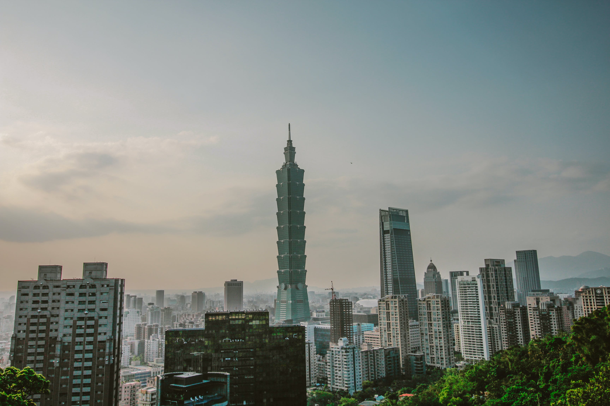

(It means "hello" in Taiwanese)
Welcome to Taiwan, a captivating island nation in East Asia that seamlessly blends a rich history with modern vibrancy. With its diverse landscapes, vibrant cities, and unique cultural experiences, Taiwan is a treasure trove for every kind of traveler.
Nestled in East Asia, Taiwan is an island nation that sits off the southeastern coast of China, separated by the Taiwan Strait.
Taiwan's location offers a gateway to a diverse range of experiences.
Taiwan's cultural tapestry is shaped by centuries of influences, from indigenous roots to Dutch, Spanish, and Japanese colonization. Immerse yourself in this heritage through visits to temples, historic sites, and traditional markets like Jiufen.
In Taiwan's cities, especially Taipei, modern wonders abound, reflecting a perfect blend of modernity and tradition. Witness the stunning Taipei 101 dominating the skyline and dive into bustling night markets like Shilin for a culinary adventure.
Nature enthusiasts will find Taiwan a paradise with dramatic landscapes, including the marble cliffs of Taroko Gorge, the sunrise vistas of Alishan, and the serene Sun Moon Lake. Tech enthusiasts can explore Taiwan's cutting-edge contributions to the global technology scene, from semiconductor hubs to factory tours.
Taiwan's warm hospitality is a standout feature. Engage with locals through tea ceremonies, traditional crafts, or lively local festivals. Culinary adventures await, from renowned street food to upscale dining experiences, offering iconic dishes like beef noodle soup, stinky tofu, and bubble tea.
For those looking to explore beyond the main island, Taiwan's outlying islands like Penghu and Kinmen provide unique experiences with historical architecture, fresh seafood, and a laid-back island atmosphere.
Embark on your Taiwanese adventure and be enchanted by the blend of tradition and innovation, the warmth of the people, and the stunning landscapes. Whether seeking cultural immersion, natural beauty, or technological marvels, Taiwan has something special for every traveler. Start your journey into this vibrant island nation, where every moment is an opportunity for discovery.